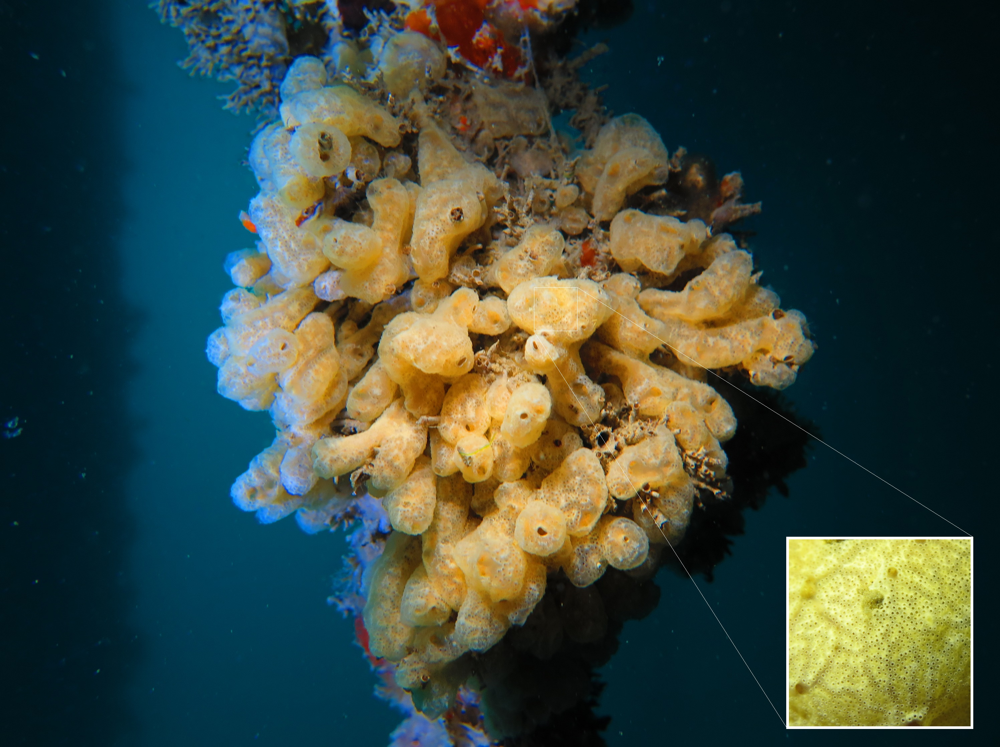
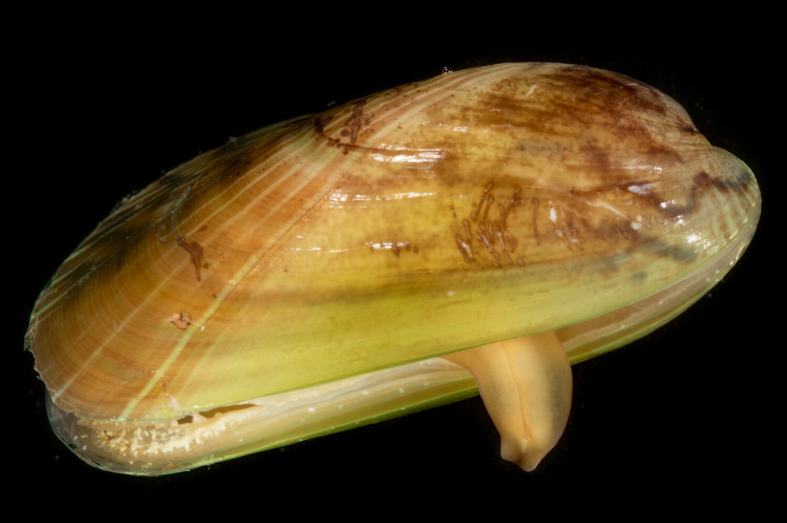
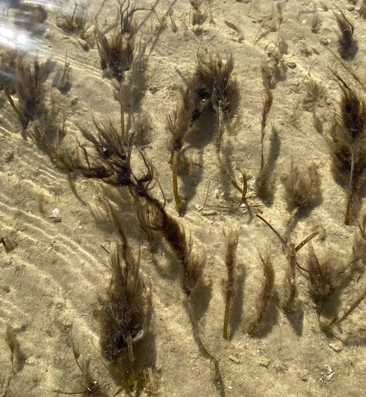

What's This Guide For?
The Job
You're cleaning hulls. You need to spot the bad stuff before you scrape it off. This guide shows you what to look for and what to report.
Why It Matters
Marine pests hitch rides on hulls. Some nasty ones have already turned up in WA - like carpet sea squirt at HMAS Stirling. Divers are our first line of defence.
Priority Levels
- NOXIOUS WA noxious listed. Stop work & report to DPIRD within 24hrs.
- WATCH Emerging threat — not yet in WA. Document & report.
- NATIVE Normal WA fouling — no report needed.
Key species from WA noxious list. Full list: fish.wa.gov.au (Schedule 5)
⚠️ Suspect a Noxious Species?
- STOP cleaning — cease work until DPIRD advises
- Take photos - close-up + wide shot, use your hand for scale
- Note where on the hull (bow distance, depth, port/starboard)
- DON'T scrape it off — leave specimen intact
- Report to DPIRD FishWatch 1800 815 507 within 24 hours
Part 1: Invasive Hull Foulers — The Bad Stuff
These are the pests that stick to hulls and need reporting. If you see any of these, follow your reporting protocol.

Nicknamed "sea vomit" - and it looks like it. Creamy-tan carpet that grows over everything. Already found at HMAS Stirling and Henderson.
How to Spot It
- Creamy/tan/orange colour - like old wax
- Veiny look - like varicose veins
- Feels leathery, NOT slimy
- Can drip down like melted candle wax
- Tiny holes (siphons) all over surface

Big mussel with bright green shell. Common on ships coming from Asia. Check sea chests carefully - they love them.
How to Spot It
- Young ones = bright emerald green
- Older ones = brownish-green
- Big - 80-165mm (hand-sized)
- Inside is blue-green when open
- Beak points down

Small stripy mussel that forms thick clusters. Loves brackish water so check sea chests and anywhere with mixed water.
How to Spot It
- Small - only up to 25mm (thumbnail-sized)
- Dark stripes on shell
- Packs together in thick layers
- Often found inside sea chests

Heavy-duty fouler from Africa/South America. Forms thick mats that are hard to scrape. NOT in Australia.
How to Spot It
- Dark brown to black shell
- Up to 90mm (fist-sized)
- Builds up in dense clumps
- Thick shell, hard to break

Big mussel from NZ. Look for vessels that have been to New Zealand recently. NOT in Australia.
How to Spot It
- Green "lip" around shell edge - key ID feature
- Brown-green shell outside
- Massive - up to 240mm (bigger than your hand)

Large oysters are virtually impossible to identify to species in the water. Includes Pacific (M. gigas), Black Scar (M. bilineata) and Suminoe (M. ariakensis) oysters. Photograph any large oysters for lab ID.
How to Spot It
- Messy irregular shell - no neat shape
- Can get huge - up to 400mm
- Rough frilly edges - sharp!
- Glued flat to the surface

Big feathery worm in a leathery tube. The fan is much bigger than native tube worms. Already established in WA — still report.
How to Spot It
- Fan is HUGE - 45-60mm across
- Fan spirals in (not flat like natives)
- Stripy - orange/purple/white bands
- Tube is brown and leathery
- Fan pulls in when you get close

Big brown seaweed with a central spine. Established in VIC, TAS, SA but NOT yet detected in WA. Report any sightings in WA waters.
How to Spot It
- Big brown fronds with a midrib spine
- Wavy ruffled edges
- Can be up to 3m long
- Frilly reproductive bit at the base

Bright green feathery algae. Called "killer algae" because it smothers everything. WA Noxious listed — not yet in WA.
How to Spot It
- Bright green - stands out
- Feather-shaped fronds
- Spreads with creeping runners
- Can get 65cm tall

Large voracious seastar. WA Noxious Listed — NOT established in WA. Would devastate WA shellfish and seafloor ecosystems.
How to Spot It
- Large — up to 50cm diameter
- 5 arms with distinctive upturned tips
- Yellow-orange body with purple markings
- Undersides completely yellow

Small mussel that forms extremely dense mats. WA Noxious Listed. Established in VIC, TAS, SA.
How to Spot It
- Small - up to 30mm
- Thin, fragile, easily crushed shell
- Greenish with zigzag markings
- Iridescent radiating bands
- Forms dense mats (thousands per m²)

Medium mussel with variable external colours. NOT in Australia. Forms extremely dense colonies. Key giveaway: distinctive blue-purple opalescent interior and yellowish flesh — open the shell to confirm ID.
How to Spot It
- Medium 22-50mm
- Variable exterior: black, brown, grey, orange
- Zigzags, spots, or concentric bands on shell
- Blue-purple opalescent interior — distinctive giveaway
- Yellowish flesh — key ID feature
- Forms extremely dense colonies
Reference: NIMPIS — see NIMPIS for additional reference photos showing internal coloration.

Medium crab with distinctive hairy "mittens" on claws. NOT in Australia. Can carry lung fluke parasite.
How to Spot It
- Dense patches of dark hair on claws ("mittens")
- White-tipped claws
- Up to 80mm carapace
- Olive-brown shell
- 4 spines either side of eyes
Part 2: Niche Area Hitchhikers
These aren't foulers - they don't grow on the hull. But they hide in sea chests, rope guards, gratings and other nooks. You might find them when inspecting those areas.

Green crab that hides in sea chests and rope guards. NOT established in WA - remains on the noxious list. Report to DPIRD immediately.
How to Spot It
- Green shell (can be orange underneath)
- 5 spines each side behind the eyes
- Up to 90mm across
- Check sea chests and niche areas

Swimming crab with paddle-shaped back legs. Can shelter in niche areas on vessels.
How to Spot It
- Back legs are flat paddles (for swimming)
- 6 spines between the eyes
- 5 spines on each claw
- Up to 120mm across
- Olive-brown colour
Part 3: Native Hull Fouling — The Normal Stuff
This is what you'll see most of the time. It's the normal WA marine growth. Knowing it helps you spot when something's wrong.

Your everyday Aussie mussel. Blue-black shell in clumps. You'll scrape heaps of these.
How to Spot It
- Blue-black to dark brown shell
- Pointy triangle shape
- Clumps together with threads
- NOT green - that's the Asian one

The classic white barnacle cones. All over hulls, props, sea chests. Everywhere.
How to Spot It
- White/grey cone shapes
- Diamond-shaped opening at top
- Glued directly to surface
- Can be packed solid

Big pink/red barnacles. Same deal as the white ones but bigger and coloured.
How to Spot It
- Big cones - up to 50mm across
- Red/pink colour
- Ridged shell plates
.jpg?width=400)
White calcareous tubes with small feathery fans. Tiny spiral ones (spirorbids) and bigger straight ones.
How to Spot It
- Hard white tubes (calcium)
- Spirorbids are tiny coils - 3mm
- Larger serpulids are straight/curved
- Small feathery fan - NOT the big spiral fan of European fan worm

White tube worm that builds up in reef-like masses. Pink feathery tentacles.
How to Spot It
- White calcified tubes in clumps
- Builds up in reef-like masses
- Pink feeding tentacles

Feathery purple/brown tufts. Looks like a fuzzy bush or seaweed but it's actually tiny animals.
How to Spot It
- Purple/brown colour
- Bushy branching shape
- Delicate and feathery
- Flexible - waves in current
.jpg?width=400)
Flat orangey-red crust that spreads over surfaces. Very common hull fouler.
How to Spot It
- Red/rust/orange sheets
- Flat encrusting growth
- Dark black edge where it's growing
- Hard calcified surface
.jpeg?width=400)
White/pink lumpy crusts. Looks like someone splattered plaster on the hull.
How to Spot It
- White/pink colour
- Chalky texture
- Lumpy irregular growth
- Hard surface

Soft spongy sheets in various colours. Orange, yellow, grey. Has tiny holes (oscules) all over. Note: In the photo, the pink encrusting growth is the sponge — other organisms in the image (e.g. smooth rubbery sheets) may be colonial ascidians, which can look similar at first glance.
How to Spot It
- Sheet or cushion growth on hard surfaces
- Various colours — often orange, pink, yellow, grey
- Soft and spongy to touch (not rubbery like ascidians)
- Tiny pores (oscules) visible — key difference from ascidians
- Crumbly texture when broken (ascidians are more rubbery)

Thin jelly-like mats. Similar to the invasive Didemnum but thinner and more gelatinous. Be careful with ID.
How to Spot It
- Thin gelatinous mats
- Various colours
- Thinner than invasive carpet sea squirt
- No veiny/waxy texture
_-_Lincoln_Park_(Seattle).jpg?width=400)
Single blob-shaped animals, orange or white. Two holes on top (siphons).
How to Spot It
- Orange/white colour
- Single blobs, not colonies
- Two openings on top
- Leathery skin

Bright green thin sheets. Looks like salad leaves. Common in nutrient-rich ports.
How to Spot It
- Bright green
- Thin see-through sheets
- Ruffled wavy edges
- Soft like lettuce

Stringy green filaments in tangled mats. Like green hair or cotton wool.
How to Spot It
- Bright green filaments
- Branching threads
- Tangled mats
- Coarse stringy texture

Fine brown fuzz. First thing to grow on new fouling. Forms a fuzzy coating.
How to Spot It
- Fine brown filaments
- Fuzzy appearance
- Early coloniser - first to appear
- Soft and delicate
_(48737220543).jpg?width=400)
Red/purple branching seaweed. Rubbery texture. Common on hulls.
How to Spot It
- Red/purple colour
- Branching fronds
- Rubbery cartilage texture
- Common in subtidal zone
_-_Mytilidae_-_Mollusc_shell.jpeg?width=400)
Native mussel with fuzzy hairy shell. Brown/black with distinctive bristly covering.
How to Spot It
- Hairy/fuzzy shell covering
- Brown/black colour
- Dense clumps
- Up to 60mm
Quick Reference — WA Noxious Species
Key species from WA noxious fish list (Schedule 5, Fish Resources Management Regulations 1995). Full list at fish.wa.gov.au
🛑 WA Noxious Listed — Report to DPIRD
| Type | Species | Quick ID |
|---|---|---|
| Sea Squirt | Carpet Sea Squirt | Creamy veiny mat, waxy texture, dripping tendrils |
| Mussel | Asian Green Mussel | Bright green shell (young), big 80-165mm |
| Mussel | Black-striped False Mussel | Small 25mm, dark stripes, in sea chests |
| Tube Worm | European Fan Worm | Big spiral fan 45-60mm, stripy, brown tube |
| Crab | European Shore Crab | Green shell, 5 spines each side — NOT in WA |
| Seastar | N. Pacific Seastar | Large 5-arm, yellow-orange, up to 50cm |
| Algae | Killer Algae | Bright green feathery fronds |
⚠️ Watch List — Emerging Threats
| Type | Species | Quick ID |
|---|---|---|
| Kelp | Japanese Kelp (Wakame) | Big brown fronds with spine — NOT in WA |
| Oyster | Large Oysters | Messy shell, sharp — photo for lab ID |
| Crab | Asian Paddle Crab | Paddle-shaped back legs, 6 spines between eyes |
| Mussel | NZ Green-lipped Mussel | Green lip on shell edge, massive 240mm |
| Mussel | Brown Mussel | Dark brown/black, big 90mm, thick clusters |
Report It
MarineStream
Biofouling Manager: Mat Harvey
Operations Manager: Sam Diamond
Website: www.marinestream.com.au
National Reporting
Marine Pests Australia
Use your state contacts below for fastest response
DPIRD Western Australia
FishWatch 24-hour hotline
Email: aquatic.biosecurity@dpird.wa.gov.au
App: MyPestGuide Reporter
📍 WA Reporting Notes
- HMAS Stirling & Henderson: Carpet sea squirt (CSS) detected - heightened surveillance
- European Shore Crab: NOT established in WA - remains noxious listed - report immediately
- Wakame: In VIC/TAS/SA but NOT detected in WA - watch for it
- Report to DPIRD within 24hrs. Cease work until advised how to proceed.
- This guide shows key species. Full noxious list: fish.wa.gov.au